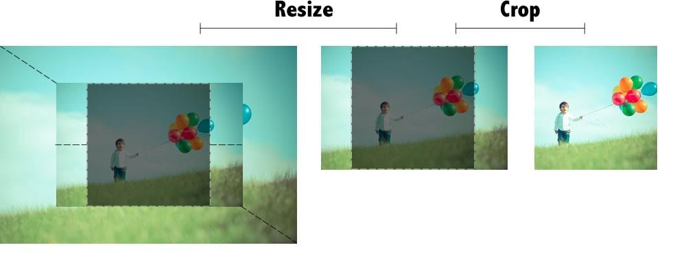

Una vez tengamos una estructura definida, lo mejor es ir fragmentando nuestro código en diferentes Templates. Las más utilizadas son las siguientes:
Jerarquía de Templates: https://developer.wordpress.org/files/2014/10/wp-template-hierarchy.jpg
<?php get_header( 'tienda' ); ?>header-tienda.php en lugar de header.phpSepara la zona de cabecera y footer en dos archivos distintos.
single-post.php o single.php. La primera tiene más prioridad, por lo que se intenta cargar antes. Si no existe se intentará con la segunda.page.php.Las plantillas de las páginas admiten además otras formas de personalización:
single.phpcategory.php, tag.php, author.php, date.php y archive.php son todas plantillas de archivo. Cada una muestra una información distinta.single_tag_title()header-archive.php y elimina el menú de dicha plantilla. Llama a dicha cabecera desde archive.php usando get_header()En este punto podemos darnos cuenta de que tenemos casi el mismo código repetido en varias zonas.
Es más que recomendable agrupar el código en común en algún otro sitio e incluirlo desde donde queramos.
Para ello se usa la función get_template_part( $slug, $name )
Incluir el archivo content.php
<?php get_template_part( 'content' ) ?>Incluir el archivo content-page.php, si no existe incluir content.php
<?php get_template_part( 'content', 'page' ) ?>get_template_part() para reubicar el contenido del post en content.php (la parte del tag <archive> es suficiente)search.php se carga cuando estamos intentando realizar una búsqueda. No tiene ninguna particularidad aparte de la función get_search_query()
search.php. Básate en index.php para ello pero usa la función get_search_query(). Elimina de index.php lo que ya no necesites.Podemos incluir nuestro código que saca por pantalla la Sidebar en un archivo llamado sidebar.php
Se utiliza de forma parecida a get_header(), usando esta vez get_sidebar() allá donde queramos incluir el código.
Incluir el archivo sidebar.php
<?php get_sidebar() ?>Incluir el archivo sidebar-page.php, si no existe incluir sidebar.php
<?php get_sidebar( 'page' ) ?>sidebar.phpfunctions.php que se muestre únicamente en single.phpauthor.php copiando el contenido de archive.php para empezar con una base.<?php if ( have_posts() ): the_post(); ?>
<div class="author-bio">
<div class="avatar"><?php echo get_avatar( get_the_author_meta( 'ID' ), 32 ); ?></div>
<?php if ( get_the_author_meta( 'description' ) ) : ?>
<div class="author-bio-content"><?php the_author_meta( 'description' ); ?></div>
<?php endif; ?>
</div>
<?php rewind_posts(); ?>
<?php endif; ?>Necesitarás también añadir
<?php the_author_posts_link(); ?>Los formatos de posts nos permiten fácilmente mostrar los posts de una manera distintiva. Por ejemplo, podríamos querer que los posts de tipo link, no se mostraran de la misma manera que el resto (podríamos eliminar el título o cualquier otra cosa).
WordPress permite nativamente los siguientes tipos de posts:
Sin embargo todos estos tipos no están activados por defecto. Para hacerlo, debemos insertar el siguiente código en nuestro functions.php usando el action after_setup_theme
<?php add_theme_support( 'post-formats', array( 'link', 'aside' ) ); ?>get_template_part( 'content' ) en single.php para que en lugar de cargar content.php pueda cargar content-aside.php o content-link.php mediante la función get_post_format()Funcionan de manera similar a los formatos pero esta vez no hay que activarlos.
Para crear una plantillas de página simplemente crearemos un nuevo fichero .php y le pondremos la siguiente cabecera:
/**
* Template Name: Nombre de la plantilla
*/Cuando WordPress cargue una página con una plantilla determinada, intentará cargar dicho fichero en lugar de page.php
Para que quede todo más organizado es mejor meter las plantillas en un subdirectorio llamado templates dentro de nuestro tema
Contact Form en templates/contact-form.phpinit para procesar el formulario.comments.php. Es uno de los más complicados dentro de un desarrollo de un Tema aunque se puede simplificar mucho.<?php comments_template( $file, $separate_comments ); ?>$file podemos indicar el archivo a cargar pero por defecto es comments.php$separate_comments podemos separar los comentarios por tipo de forma que los comentarios aparezcan antes y luego trackbacks y pingbacks al final.Los comentarios funcionan de forma parecida al Loop pero tiene funciones con distinto nombre
Ejemplo de esquema básico: https://gist.github.com/igmoweb/0e9d9f6f086ab34f2cfd
post_password_required() devuelve false )have_comments() de forma parecida al Loopwp_list_comments() que acepta un array de parámetros para personalizarlo a nuestro gusto.get_comment_pages_count()) y en Ajustes hemos chequeado la opción de Paginar Comentarios (get_option( 'page_comments' )), mostraremos la navegación de comentarios.previous_comments_link() y next_comments_link() sacan los enlaces de paginacióncomment_form() saca por pantalla el formulario para crear un nuevo comentario.comments.php e inclúyelo desde single.php y page.phpBasándote en las opciones de wp_list_comments en el Codex, realiza las siguientes personalizaciones:
fictizia_comment(): https://gist.github.com/igmoweb/d5f8ab051330ddf1433fget_comments_number() puede serte de ayuda.wp_enqueue_script().Cuando subimos una imagen, WordPress genera como mínimo cuatro tamaños distintos a partir de ella:
WordPress permite añadir nuevos tamaños de imágenes si los necesitáramos para nuestro Tema/Plugin:
<?php add_image_size( 'imagen-destacada', 700, 450, false );El último argumento (false) significa que la imagen no será recortada sino que intentará ajustar el tamaño proporcionalmente. Si el parámetro fuera true entonces la imagen será recortada de alto y de largo para conseguir dicho tamaño.
Desde la versión 3.9, dicho parámetro acepta un array que indica la posición del área de recortado. Si no se indica nada, el recorte se hará lo más centrado posible.
Si una imagen es demasiado pequeña para abarcar uno de los tamaños, éste no será generado.
<?php the_post_thumbnail( 'imagen-destacada' );<?php add_theme_support( 'post-thumbnails' );add_theme_supportadd_image_size.content.php saca las imágenes destacadas de cada post usando the_post_thumbnail()Además de todas las plantillas que hemos visto también existen algunas otras que merece la pena revisar:
attachment.php Se carga cuando estamos en la página de un elemento de la biblioteca de medios, no sólo imágenes. WordPress es capaz de cargar también image.php sólo para imágenes, o pdf.php sólo para documentos PDFs. Depende del valor post_mime_type del post.searchform.php: Es la plantilla que WordPress utiliza para mostrar el formulario de búsqueda, ya sea en un widget o usando la función get_search_form()En la pantalla de administración de selección de tema, cada uno de ellos tiene una imagen representativa. Para incluir uno en nuestro tema simplemente debemos crear un nuevo archivo en nuestro tema llamado screenshot.png con un tamaño ideal de 880x660 píxeles.
add_theme_support( 'automatic-feed-links'); añade dos etiquetas <link> dentro de <head> para indicar cuál es la URL del RSS, tanto de los comentarios como de las entradas.
Para que el Theme sea compatible con un lenguaje RTL como el árabe o hebreo se puede crear un nuevo css llamado rtl.css, WordPress lo añadirá automáticamente si detecta que el lenguaje utilizado es RTL.
Normalmente nos interesará que cuando un usuario edite contenido lo pueda ver de la forma más parecida a como lo verá luego en la
web. Para eso WordPress permite agregar una hoja de estilos sólo para el editor
de posts/páginas, etc... Se usa simplemente la función add_editor_style()
también usando el hook after_theme_setup. WordPress tratará de añadir (si lo
encuentra) una hoja de estilos que se encuentra en nuestro Tema llamada editor-
style.css. Si el lenguaje es RTL, entonces intentará agregar editor-style-rtl.css
No es obligatoria pero es bueno poner el ancho máximo del contenido de nuestro sitio. WordPress aplica dicho ancho a varios de sus estilos y algunos plugins podrían utilizarlo.
add_theme_support( 'title-tag' ); añadido en 4.1, utiliza la función wp_title() en cabecera. Sirve para que los plugins puedan cambiar el título. Antes se usaba la función directamente, ahora hay que usar add_theme_support()
add_theme_support( 'html5' );
add_theme_support( 'html5', array( 'comment-list', 'comment-form', 'search-form', 'gallery', 'caption' ) );load_theme_textdomain( 'ignacio', get_template_directory() . '/languages' );wp-content/languages/themes. Si tampoco
existe cargará el idioma en el que hemos escrito nuestras cadenas.nombre-del-dominio-es_ES.po para traducir al español,o nombre-del-dominio-he_IL.po para hacerlo al hebreo.Los Starter Themes son Temas que incluyen un esqueleto para empezar. Estos son los más famosos:
{kind=link}